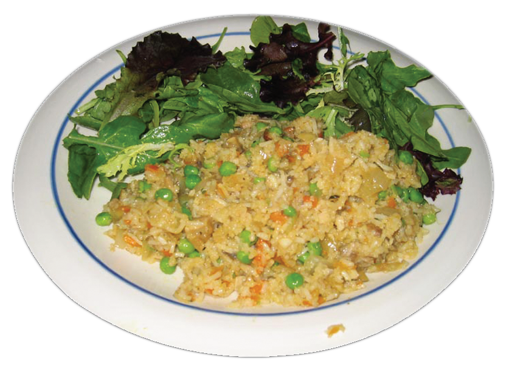

ප්රෝටීන් ශක්ති ඌණතාවයේ ඵල විපාක
ළදරු,ළමා,තරුණ වැඩිහිටි යන සියළු පාර්ශවයන්ට ප්රෝටීන් ශක්ති ඌණතාවය අහිතකර අයුරින් බලපෑම් ඇති කරයි.
- ළදරු මරණ අනුපාතය වැඩිවිම.
- ශාරීරික වර්ධනය අඩුවිම
- මානසික වර්ධනය අඩුවිම
- නිතර නිතර රෝග සහ ආසාදන වලට ලක්විම.
- ක්රියාශිලි බව අඩුවිම
- ඵලදායි වැඩකිරිමේ කාලය අඩුවිම
- අඩු ආයු කාලය (විශ්රාම යාමට පෙර මරණයට පත්විම)
- ගැහැණු දරුවන්ගේ අඩු පෝෂණ තත්ත්වය නිසා ඊලග පරම්පරාවේ අඩු බර දරු උපත් ඇති විම.
ප්රෝටීන් ශක්ති ඌණතාවය සඳහා පිළියම්
- ශක්තිජනක, ප්රෝටීන් බහුල ආහාර ප්රමාණවත් ලෙස ලබා දිම.
(උදා :- මස්, මාළු, කිරි, බිත්තර ආදිය)
- ආහාර වර්ගවල ශක්ති ප්රමාණයන් වැඩි කිරීමට මේදය , පියළි බෝග වර්ග ආදිය එකතු කිරිම
උදා :- (තෙම්පරාදු කල එළවළු බත් )
- දිනකට ගන්නා ආහාර වේල් ප්රමාණය වැඩි කිරිම.(4-5 පමණ)
- ප්රතිශක්තිය සඳහා අවශ්ය වන විටමින් A ලබා දෙන පළතුරු හා එළවළු සුලබව ආහාරයට ගැනීම
- ආසාදන තත්ත්ව වලට ඉක්මනින් ප්රතිකාර කිරීම
- බර සහ උස ගැන සැමවිටම සැලකිලිමත් විම.
- මව් කිරි බොන ළදරුවන් ප්රෝටීන් ශක්ති ඌණතාවයෙන් පෙළෙන විට දිගටම මව් කිරිදිම.
(අනෙතුත් අත්යාවශ්ය පෝෂක ලබා දෙන අතරම)
- මාස 06ක් වන තුරු ලබා දිය යුත්තේ මව් කිරි පමණි
- අවුරුදු 02ක් පමණක් වනතුරු අනෙකුත් ආහාර සමග මව්කිරි දිය යුතුය.
